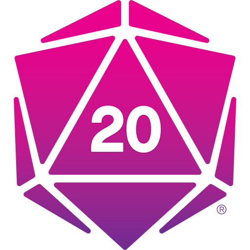
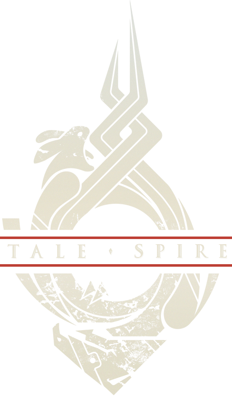
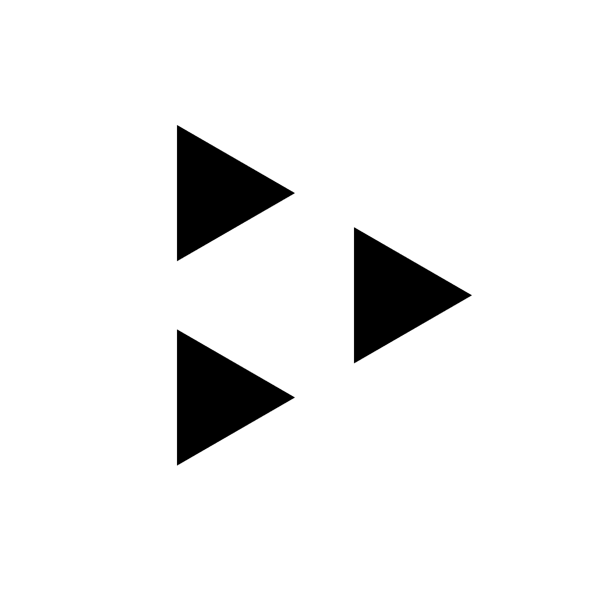

The Techie Gamemaster’s Tome
⚠️ 작업 중인 사이트입니다.
아직 채워 나가야 할 부분이 많으며, 지속적으로 업데이트하고 있습니다.
기본적으로 TRPG는 펜과 종이만 가지고 할 수 있는 게임입니다. 드라마 빅뱅 이론에 “상상력은 세계 최고의 그래픽카드”라는 대사가 있듯 별다른 도구 없이도 얼마든지 몰입감 있고 재미있게 즐길 수 있습니다.
그러나 게임마스터로서 마스터링을 하다 보면 여러 가지 수단을 활용해 세션을 더욱 풍성하게 꾸미고 싶은 욕심이 생깁니다. 하지만 이미 룰북과 자료 구입에 많은 돈을 소비한 상황에서 미니어쳐나 각종 RPG 용품 가격을 보면 이렇게 부푼 마음도 꺾이고 맙니다. 국내에서는 구입하기가 번거롭다는 것도 방해 요인 중 하나입니다.
이러한 상황에서 다양한 멀티미디어 환경을 구성할 수 있는 가장 저렴한 대안은 컴퓨터입니다. TRPG를 온라인으로 즐기는 ORPG의 경우 컴퓨터가 유일한 수단이기도 합니다. 다들 컴퓨터 있잖아요?
이 사이트를 통해 TRPG에 활용할 수 있는 몇 가지 디지털 툴과 사용 방법을 소개하고자 합니다. 개인적인 사용 경험을 바탕으로 작성했기 때문에 여기에 실리지 않은 다른 좋은 툴도 많이 있을 것입니다. 혹시 소개하고 싶으신 툴이 있거나 이 사이트의 정보에서 오류를 발견하셨다면 shoyuvanilla@gmail.com으로 제보해 주시면 검토하겠습니다.
가상 게임테이블
가상 게임테이블(Virtual Tabletop, VTT)은 TRPG를 즐길 수 있는 디지털 환경입니다. 주사위 굴림이나 대사 등을 입력할 수 있는 채팅 기능, 캐릭터의 정보를 저장하고 갱신할 수 있는 자동화된 캐릭터 시트 기능, 캐릭터의 위치와 현재 상황 등을 표현할 수 있는 지도 및 토큰 기능 등을 갖추고 있습니다.
주로 온라인으로 TRPG를 플레이하기 위해 사용하는 경우가 많지만 오프라인 세션에서도 실물 지도와 미니어쳐의 훌륭한 대체제 역할을 할 수 있습니다.
Roll20
가장 대중적인 가상 게임테이블 플랫폼입니다.
Foundry Virtual Tabletop
Foundry Virtual Tabletop은 셀프 호스팅 방식의 웹 기반 가상 테이블탑입니다.
2020년 5월 22일 정식 발매 예정이며 5월 1일 현재 사전 구매 형식으로 베타 버전을 사용할 수 있습니다.
라이선스 가격은 미화 50 달러입니다.
장점
- 모던 웹 기술로 만들어져 Roll20에 비해 성능이 좋고 다양한 기능을 지원합니다.
- 한번 구매하면 용량이나 기능 제한 없이 자유롭게 사용할 수 있습니다.
- API가 공개돼 있어 직접 모듈을 개발해 기능을 추가할 수 있고 다른 사람이 개발한 모듈도 쉽게 설치할 수 있습니다.
단점
- 서비스 제공자가 서버를 운영하는 타 플랫폼과 달리 직접 호스팅해야 합니다.
- 게임 룰 시스템을 공식으로 지원하는 것이 아니라 사용자들이 직접 개발합니다. 때문에 Roll20, Fantasy Grounds 등의 플랫폼처럼 메이저 룰 데이터를 직접 구매해서 사용할 수 없습니다.
- 마이너 룰 면에서도 수많은 사용자들이 각종 룰의 캐릭터 시트를 구현해 둔 Roll20에 비해 아직 지원하는 룰 시스템이 적은 편입니다. 2020년 5월 1일 기준으로 개발된 룰 시스템 목록은 아래와 같습니다.
- 제13시대 (아크메이지 엔진)
- D&D 5판 (Foundry Virtual Tabletop 개발자가 직접 개발 중인 시스템)
- 던전 월드
- 페이트 (코어, 기동형, Condensed)
- 누메네라
- 패스파인더 1판
- 패스파인더 2판 (가장 활발하게 개발 중인 시스템)
- 섀도우런 5판
- 스타파인더
- 새비지 월드 어드벤쳐 에디션
- 워해머 판타지 롤플레이 4판
이 외에도 공식으로 지원하는 언어가 영어 뿐이라는 점이 있긴 하지만 대부분의 가상 게임테이블이 영어만 지원하므로 따로 단점에 기재하지는 않았습니다. 모듈 형식으로 로컬라이징을 할 수 있으며 현재 Shoyu Vanilla에 의해 기본 프로그램의 한국어화가 완료됐고 D&D 5판 시스템의 한국어화가 진행 중입니다. (전체 시스템, 클래스 및 주문 완료, 아이템 및 클래스 요소 진행 중)
셀프 호스팅 방식이라는 것이 가장 큰 장점이자 단점으로 사용자가 원하는 방식으로 자유롭게 커스터마이즈 할 수 있고 Roll20의 느린 서버로부터 자유로울 수 있지만 컴퓨터와 친숙하지 않은 사용자는 호스팅이 생소할 수 있습니다. 이 사이트에서는 컴퓨터에 숙련 보너스를 받지 않는 게임마스터도 간단하게 호스팅 환경을 구축할 수 있도록 돕는 것을 목표로 몇 가지 가이드를 제공합니다.
기능 소개
호스팅
Foundry Virtual Tabletop은 Roll20등의 웹 서비스와 달리 직접 서버를 호스팅해야 하는 셀프 호스트 방식의 웹 어플리케이션입니다. 호스팅 방식은 크게 다음과 같은 세 가지가 있습니다.
개인 PC로 호스팅하기
데스크탑 컴퓨터, 노트북 등 개인 PC로 호스팅하는 방식입니다. 호스팅 자체는 Foundry Virtual Tabletop 어플리케이션을 실행하기만 하면 되기 때문에 매우 간단합니다. 다만 ORPG 용도로 사용하는 경우 네트워크 주소 변환(NAT) 문제로 인해 공유기에 포트 포워딩 설정을 하거나 Hamachi, ZeroTier 등의 가상 사설망 서비스를 이용해야 합니다.
장점
- 별도의 서버 유지 비용이 들지 않습니다.
- 호스팅 자체는 특별히 어려운 점이 없습니다.
단점
- ORPG를 위해 사용하는 경우 플레이어가 다른 로컬 네트워크에 있을 가능성이 높기 때문에 공유기에 포트 포워딩을 설정하거나 Hamachi, Zerotier 등의 가상 사설망 서비스를 이용해야 합니다.
- 위 문제로 인해 가상 사설망 서비스를 사용하는 경우 플레이어 입장에서는 나머지 두 방식에 비해 접속하기가 번거롭습니다.
전용 서버 개설하기
장점
- 내 전용 서버를 보유한다는 것은 뿌듯한 일입니다.
- 플레이어가 매우 쉽게 접속할 수 있습니다.
단점
- 서버 유지 비용이 조금 들어갑니다. (AWS Lightsail 기준 월 $3.5)
- 서버 개설이나 관리 경험이 없는 경우 초기 서버 구축이 조금 어려울 수 있습니다.
호스팅 위탁하기
현재 The Forge, Foundry Server 두 곳의 업체가 Foundry Virtual Tabletop과 공식 파트너십을 맺고 호스팅을 대행해 줍니다. 직접 서버를 구축할 필요 없이 월별 사용료를 지불하면서 Roll20 등의 웹 기반 타 플랫폼처럼 편리하게 사용할 수 있습니다. 하지만 Foundry Virtual Tabletop 라이선스는 직접 구매해야 합니다.
장점
- 서버 개설 및 관리와 관련된 복잡한 문제는 전문가에게 맞기고 게임에 집중할 수 있습니다.
- 플레이어가 매우 쉽게 접속할 수 있습니다.
단점
- 서버 유지 비용이 조금 들어갑니다. (플랜에 따라 월 $4~13)
- 서버가 해외에 있어 네트워크 상태가 쾌적하지 않을 수 있습니다.
개인 PC로 호스팅하기
Foundry Virtual Tabletop 공식 사이트에서 라이선스를 구매한 후 현재 PC의 운영체제에 맞는 프로그램을 다운받습니다.
다운받은 프로그램을 설치 후 실행하면 다음과 같이 Electron 기반 클라이언트가 전체화면으로 실행되며 동시에 PC는 Foundry Virtual Tabletop을 호스팅하는 서버 역할을 하게 됩니다.
네트워크 주소 변환(NAT) 문제
포트 포워딩
작성 예정
가상 사설망 서비스 이용
Hamachi
ZeroTier
전용 서버 개설하기
⚠️ 리눅스 서버나 웹 호스팅에 익숙하지 않은 분들을 대상으로 작성했습니다.
ssh 클라이언트 등 별도 프로그램 설치나 리눅스 터미널 명령은 생소할 것이라 생각해 가능한 줄였습니다. 좀 더 일반적인 가이드는 Foundry Virtual Tabletop 커뮤니티 위키를 참고하시기 바랍니다.
호스팅 위탁하기
TaleSpire
Unity3D로 개발 중인 PC 어플리케이션 방식의 가상 게임테이블입니다. 2020년 5월 1일 기준으로 Kickstarter 후원자들을 대상으로 베타 테스트가 진행 중입니다.
이미지
지도
지도 제작
지도를 제작할 수 있는 툴 목록입니다.
Wonderdraft
Dungeondraft
Dungeon Painter Studio
Grid Cartographer
무료 지도
토큰
무료 토큰
무료 토큰 이미지를 제공하는 사이트 목록입니다.
2-Minute Tabletop
Forgotten Adventures
토큰 제작
직접 토큰 이미지를 제작할 수 있는 사이트 목록입니다.
TokenStamp 2
2-Minute Token Editor
초상화
기타
PrintableHeroes
사운드
배경 음악, 앰비언트 사운드, 효과음 등의 음향 효과는 분위기를 조성하고 몰입감을 높이기에 매우 효과적입니다.
대부분의 가상 게임테이블은 음향 효과 기능을 내장하고 있지만 저장 용량의 제약이나 불편한 인터페이스, 부족한 기능 등의 문제로 별도의 사운드보드를 찾기도 합니다. 반면 오프라인 TRPG에서는 가상 게임테이블이나 사운드보드 대신 스피커와 음원만으로도 충분한 경우도 많습니다.
음원
사운드보드
사운드보드는 수록된 음원을 재생할 수 있는 컴퓨터 프로그램이나 웹 어플리케이션, 장치 등을 가리키는 말입니다. 사운드보드에 내장된 다양한 음원을 활용하면 필요한 음원을 일일이 찾는 수고를 덜 수 있습니다.
오프라인 세션의 경우 출력이 충분한 스피커 말고는 크게 신경을 쓸 것이 없지만 온라인 세션에서는 모든 참가자들이 같은 음원의 같은 부분을 동시에 들을 수 있도록 할 수단이 필요합니다. 일부 사운드보드는 여러 사람과 동시에 연결해 싱크를 유지하는 기능을 지원하지만 그렇지 않은 경우 오디오 출력을 마이크 입력으로 변환할 수단이 필요합니다.
Tabletop Audio
Syrinscape
Phanary
myNoise
기타
Shoyu Vanilla
책읽기와 테이블탑 게임을 좋아하는 게임 개발자입니다.
- github: https://github.com/ShoyuVanilla
- contact: shoyuvanilla@gmail.com